行止有居——京张居业接力
以京张铁路的编组、换挂与直通为文化线索，用一线、三站、四居、六份接力合同和九态人工交接构建可转换住房、工作空间与公共服务之间的短链；全部空间表达均为基于 provisional geometry 的概念建议。
行止有居——京张居业接力
副标题：可转换之家与居业短链
“行”是沿京张廊道抵达、转岗、迁居与再出发，“止”是在一段人生和一项事业中获得安顿，“有居”则要求住处、工位、照护与公共服务不因一次转换而彼此断开。本方案把铁路的“编组、换挂、直通”转译为城市生活机制：人可以换项目、换团队、换户型或暂时离开，但不必退出已经建立的社区关系和服务网络。方案署名为 NearCai × OpenAI Codex，是一项开放共创的概念建议，不是经审定的规划或实施承诺。
v1.2 将原来的“六接力”从叙事升级为 HOME-WORK RELAY CONTRACT。租期、户型、工位、服务、私宅同意、离开与回流各有一份合同；每份合同都声明负责与批准角色、最小输入、九态入口与目标、同意方、AI 禁区、人工决定、无 AI 与断网路径、停止触发、恢复证据和待试点校准的服务时钟。12 项本地桌面检查只验证这些结构与正反例，其中含“家庭评分”的负向 fixture 必须被拒绝；它们不是现场测试或服务绩效 指标 指标 指标。
设计依据与资料清单
本方案的任务边界首先来自《百年京张 AI 创新带城市设计国际方案征集资格预审公告》和面向全球智能体的开源征集任务书。公告确定三层工作范围、三处重点区域和总体设计深度；任务书补充三大定位、五大功能、三区两翼、AI 场景、品牌地标与持续运营要求。两者是回答“做什么”的依据，不等于现状测绘、法定控规或工程设计资料 来源 来源 标准。
专业方法遵循城市设计统筹平面与立体空间、保护地域特色并指导建筑与公共空间的原则；涉及控规深度的内容严格区分“已知任务条件”“本方案概念建议”和“待官方资料确认”三种状态。用地表达只使用仓库允许的国土空间用途代码，不以自造分类替代正式分类 标准 标准 标准。
场地判断采用官方公告、AI 原点社区公开信息、海淀“1+X+1”现代化产业体系、京张铁路遗址公园一期与二期、清华园车站文保与历史资料。Eddington、Station F、one-north、Kendall Square、MaRS 与 Barcelona 22@ 只作为背景比较，用来寻找“居住如何与创新生态相连”的可转译机制，不被当作本地规划事实 来源 来源 来源。
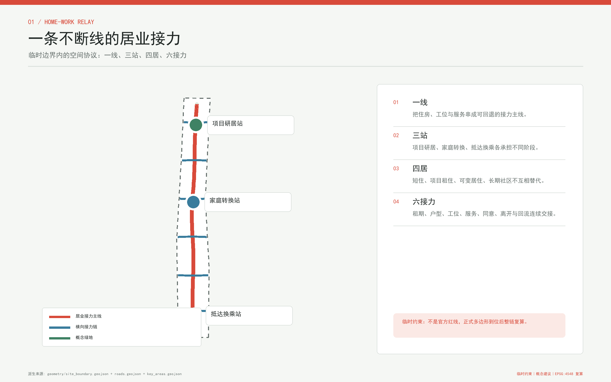
空间底图必须作特别披露。仓库 Issue #846 记录本次征集官方精确范围 polygon 尚缺，Issue #1029 记录三处重点区定位仍为粗略临时定位；因此提交中的 SITE-001 与三个 PROV-KEY feature 原样继承仓库 provisional geometry。方案不使用 OSM 自行“修正”这些边界，也不把公告文字四至画成道路红线。现阶段图层只支持概念生成、内容评审、复算演示和后续协作；依赖精确边界的专业面积评分须等待 official polygons 来源 来源 空间数据。
这套资料边界也是现状诊断的一部分：已知的是任务、公开叙事、临时范围和可复算的方案几何；未知的是宗地权属、现状建筑逐栋调查、道路红线、管线、客流、文保控制线、容积率、高度与审批条件。正式深化必须先补齐这些资料，再重算全部设计层、指标、图件与清单 深度 来源 来源。
三层范围工作框架
统筹研究范围约 43.6 平方公里，用于判断 AI 产业、人才、城市生活和区域协同；总体设计范围约 11.4 平方公里，用于组织京张遗址公园周边的更新、交通、蓝绿与公共服务；重点区域范围由众智园、AI 原点社区和大钟寺三片组成，公告面积合计约 368.4 公顷，用于验证空间动作。三个数字来自官方任务描述，但本包落图所依赖的边界仍是临时约束范围，不能反向证明精确红线 来源 深度 空间数据。
在统筹层，“三区”分别承接众智园的全栈自主创新与治理、AI 原点社区的世界级创新生态、大钟寺的智能原生新业态；“两翼”由中关村科技服务翼提供资本、知识产权和全球要素服务，由小月河场景赋能翼连接公共生活实验。五大功能不是五块互斥用地，而是 AI 全栈自主创新、世界级创新生态、AI+ 场景赋能、智能化活力城市和 AI 治理话语权在同一廊道中的协同回路 来源 标准。
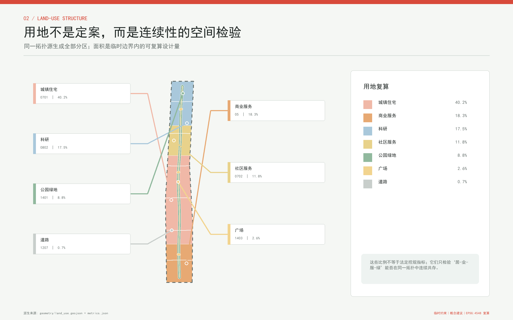
总体空间概念为“一线、三站、四居、六接力”。“一线”是沿京张公共空间组织的居业接力主线；“三站”是众智园项目研居站、AI 原点家庭转换站和大钟寺抵达换乘站；“四居”依次为抵达短住、项目租住、家庭或无障碍可变居住、社区长期居住；“六接力”处理租期、户型、工位、服务、私宅同意以及离开与回流。这里的“站”是服务与空间原型，不宣称新增轨道站或改变既有站名 深度 空间数据。
三层之间采用同一问题链：统筹层判断谁需要留下、为什么会离开；总体层把居住、研发、照护、慢行和公共服务连成短链；重点区用三种不同城市条件测试同一机制。每一层都保留“来源、空间、指标、人工复核”四个接口，使 official polygons 到位后可以整体替换与复算，而不必推翻核心命题。
统筹研究范围产业与未来城市研究
“居业接力”把人才政策的注意力从一次性吸引转向长期可转换性。AI 研究者可能在高校、创业团队和企业之间移动，服务劳动者的岗位与班次也可能变化，家庭还会经历共同居住、育儿、照护和无障碍需求。城市真正的竞争力不只在岗位数量，而在这些变化发生时，住房、工作与服务之间是否存在低摩擦的下一站。方案据此构建“知识策源 - 开源协作 - 企业转化 - 公共验证 - 社区留驻”的循环，并把住房稳定性视为创新基础设施的一部分 来源 来源。
六个国际案例提供六种互补启发。Eddington 说明大学发展可以把住房、日常设施与步行环境同步交付；Station F 与其居住配套提示创业社区需要从工位延伸到生活支持；新加坡 one-north 展示研发、商业、居住和公共空间的片区混合；Kendall Square 说明高校创新区需要面向社区的公共界面；多伦多 MaRS 展示研究、健康、资本与企业支持的中介平台；Barcelona 22@ 则提示旧产业区转型必须把创新活动与社区、公共空间和既有城市肌理共同处理。它们均为背景比较，不提供京张的本地容量或管控值 来源 来源 来源。
案例转译不采取“复制园区形态”的方式，而形成六条本地原则：住房与创新空间同步讨论；短住必须能转入较长期选项；公共服务对企业职工与周边居民保持共同入口；研发验证须可逆、低扰动、可退出；历史遗产是日常路径而非孤立展品；运营数据只做聚合改进，不做个人资格评分。Kendall Square、MaRS 和 Barcelona 22@ 的比较支持平台、公共界面与更新治理三类思考，但具体落地仍需北京本地法规和专业复核 来源 来源 来源。
未来城市形态因而不是“全自动社区”，而是能承受变化的混合网络。工作空间的开放时段、住房的可变隔间、照护服务的近距离入口、夜间安全的人工值守、慢行与轨道之间的清晰换乘，共同决定一名使用者能否从门到桌、从项目到家庭、从离开到回流。AI 的角色是解释选项、协调预约和暴露冲突，最终资格、租金、分配、医疗、安全与规划判断始终由人负责。
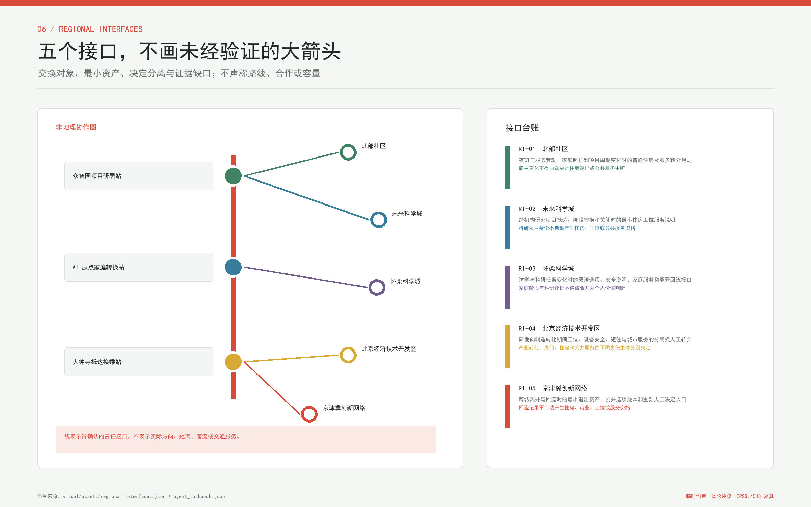
区域协同不画一张没有客流和责任依据的“大箭头图”，而是定义五个可审核接口。北部社区接口关注夜班和服务劳动者在雇主变化后的住房与基本服务连续；未来科学城接口关注跨机构项目阶段；怀柔科学城接口关注访学、安全说明与家庭阶段；经开区接口关注研发到制造期间住房、工位和设备责任分离；京津冀接口关注离开、最小退出资产与重新人工决定。每个接口只传递公开目录版本、本人选择的联系方式、必要安全状态和人工接收回执，不传递个人价值分或未经同意的家庭与雇佣档案 指标 来源。
这五个接口目前没有对接机构、路线、容量、合作协议、通勤流量或资金承诺。它们是面向专业团队的“接口需求书”：只有真实对方角色、适用规则、数据协议、接收责任和投诉路径闭合后，才能把概念接口转成试点。因此区域协同的成效保持待验证，而不是以城市名称数量代替协同质量。
铁路文化提供组织语法：“编组”把分散的住房、工位与服务形成可选择组合；“换挂”允许人生阶段改变时替换其中一项；“直通”让身份、服务记录和社区关系在不同节点之间连续。它不把人变成可调度的车辆，而是强调城市系统应围绕人的选择重新连接。这个叙事将通过服务流程、空间标识和年度居业接力周被持续使用，而不是只停留在命名与 logo 上。
总体设计范围城市更新与控规深度城市设计
总体设计采用一条曲线公共主线、六条横向接力链和三处站点原型。主线连接京张遗址公园公共空间与三处重点区，六条横向链依次把租期、户型、工位、服务、私宅同意以及离开与回流的交接问题投射为空间接口；它们可以同时承载校园园区联系、轨道接驳、照护、夜归和维修等实际路径，但这些用途不是另一套“六接力”命名。图层中的线路是概念性慢行与服务联系，不是道路红线；站点轮廓是可讨论的原型落位，不是建设用地审批或工程定位 空间数据 深度。
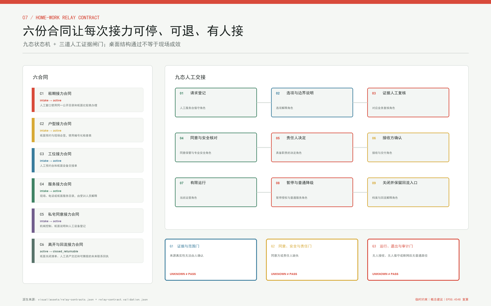
每次接力沿同一九态运行：请求登记 -> 选项与边界说明 -> 证据人工复核 -> 同意与安全核对 -> 责任人决定 -> 接收方确认 -> 有限运行；出现资料、责任、同意、安全、网络或维护问题时转入“暂停与普通降级”，完成关闭后进入“关闭并保留回流入口”。关闭不是消失：交出与接收由两个角色分别确认，只保留当事人同意的最小退出资产；再次回流必须从新的请求登记开始，不自动产生住房、工位或服务资格 指标 指标。
三道闸门决定状态是否前进。G1 检查来源、最小字段、禁止输入和普通路径；G2 检查当事人同意、专业安全与 RACI 是否有人真实接收；G3 检查值守、断网、回滚、停止授权、复审和退场资源。任一闸门缺责任人或证据即停，unknown 不是 pass。AI 只解释公开选项、提醒缺口和整理可回读差异，不作资格、租金、分配、准入、安全、医疗或法律决定 指标 标准。
城市更新以“先接口、后建筑，先可逆、后永久”为顺序。第一步在既有公共空间和可依法使用的室内界面设置人工服务台、选项说明和预约；第二步测试可拆装隔墙、共享设施时段与无障碍转换；第三步才在现状调查、权属协商和控规核准后判断是否需要建筑改造或新建。方案不预设具体拆除对象，也不以一张概念图取代逐栋安全、结构、消防和文保评估 深度 深度。
用地层以合法代码表达 AI 研发、商业与产业服务、社区服务配套、公园绿地与开敞空间之间的关系，统一从同一临时边界切分，以便检查覆盖、缝隙和重叠。它表达的是功能协同建议，不改变现行用地性质；容积率、建筑高度、建筑总量和分地块强度全部保持待正式数据补齐 空间数据 深度 标准。
建筑形态采用“小尺度庭院、可读首层、分段体量、可逆内装”的设计语言，让研发与居住相邻但不互相侵扰。靠近遗产和公园的界面强调低扰动与视线通透，靠近轨道与产业节点的界面强调全天候入口和清晰换乘；具体高度、退线、天际线与屋顶控制均不在现有资料条件下给出数值 深度 来源。
总体方案达到的是“控规深度问题清单加可复算概念设计”，而不是法定控规成果。official boundary、宗地、权属、现状建筑、市政和交通底数到位后，应以相同数据模型重做叠合、容量与实施校核；在此之前，任何面积与比例只说明提交图层自身的一致性 标准 深度。
重点区域详细设计
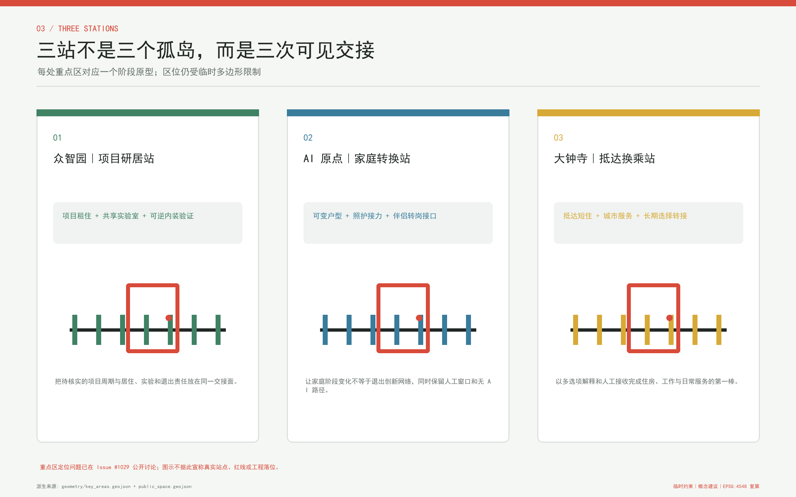
众智园项目研居站。 北部站以“项目周期”为转换单位，建议把抵达短住、项目租住、共享实验室、成果展示和清河绿色交往空间组织为可步行序列。空间原型为住研庭院与可逆内装验证间，服务重点是团队扩缩、访学到创业的租期转换，以及研发安全与居住安宁之间的可见边界。涉及五环联系、清河防洪生态、土地使用和建筑规模的判断均等待专项资料，当前只在临时粗略范围内表达概念位置 空间数据 来源。
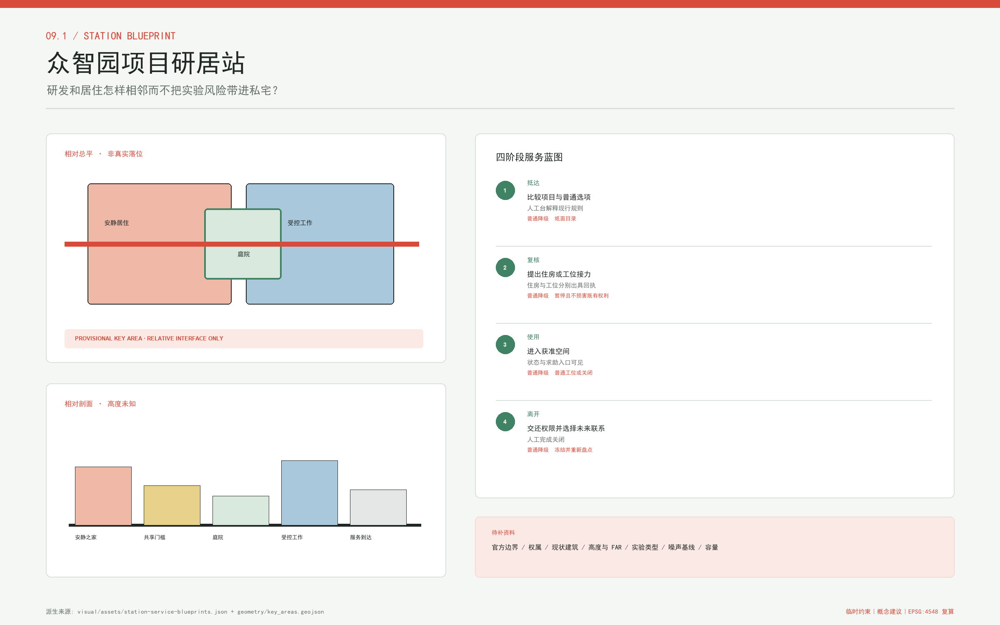
其概念总平由绿色普通入口、人工选项台、共享协作庭院、独立受控实验边界、安静居住边缘和可逆样板组成；相对剖面从“安静之家 - 共享门槛 - 庭院 - 受控工作 - 服务到达”展开，不给楼层或高度。普通、无障碍、实验、维修和应急流线分别记录，具体宽度与出入口待现场审查。服务蓝图把抵达、双重人工复核、有限使用和资产权限交还串联，任一阶段都可暂停并回到普通工位或既有合法住房状态。
AI 原点家庭转换站。 中部站以“家庭阶段”为转换单位，建议把近校成果转化、可变户型、日托与照护、无障碍支持、共享会客和慢行联系布置在日常可达的短链上。可变住宅原型允许在不改变承重与消防体系的前提下讨论卧室、工作间和照护空间的预约式转换；任何真实改造都要取得产权人、住户和专业部门同意。五道口与清华东路西口的联系仅作为需深化的轨道与慢行议题 空间数据 来源。
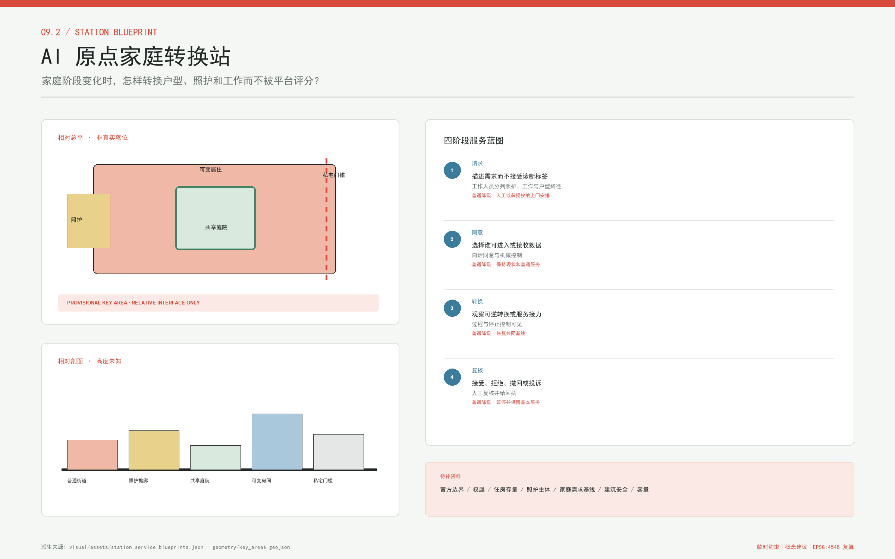
其概念总平由无 App 普通入口、照护檐廊、共享庭院、可变住宅样板、伴侣工位接口和私宅门槛组成；相对剖面在公共服务檐廊处停止，任何设备、工作人员或数据进入私宅均由住户主动触发。服务蓝图把需求描述、产权与专业同意、可逆转换、撤回与恢复分别留痕，不从行为推断家庭类型，也不因需要照护、翻译或合理便利而降低基本服务。
大钟寺抵达换乘站。 南部站以“首次抵达与跨城转换”为单位，建议将抵达咨询、短住选择、工位试用、公共服务导航和四象限步行联系组合成清晰入口。首层公共界面承接智能原生消费与商务展示，但不把生活服务变成企业专属门厅。大钟寺站周边的连通、非机动车停放、道路过街和潜力地块需依交通调查、权属和工程论证确认 空间数据 深度。
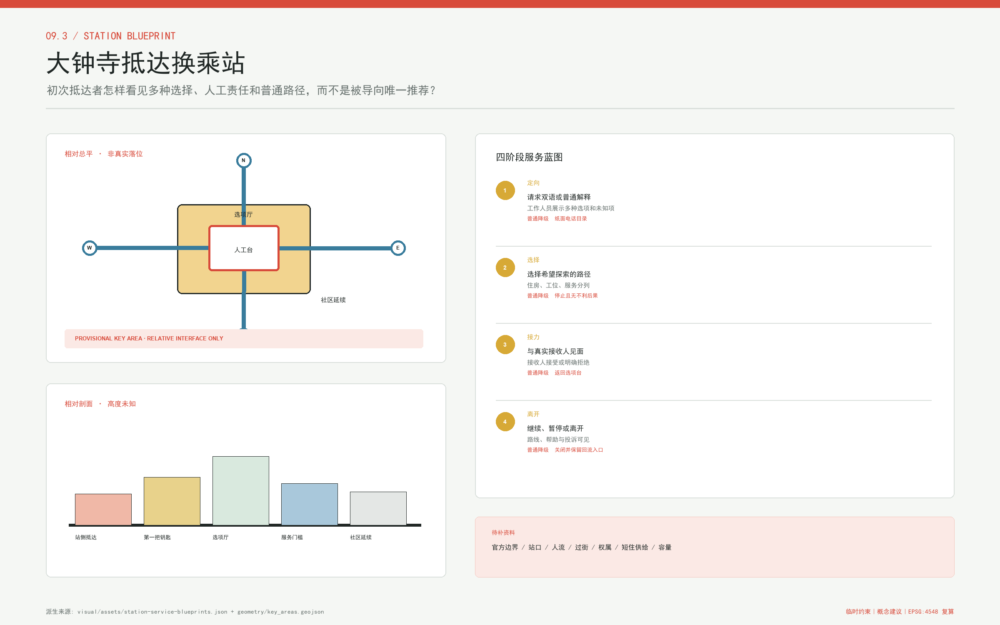
其概念总平把四向抵达、第一把钥匙、双语人工台、普通与无障碍等候、住房/工位/服务分列入口和社区延续组织成可读序列；相对剖面强调商业展示、住房解释和公共服务资格决定互不混同。服务蓝图要求接收方明确接受或拒绝，拒绝也要给出普通下一步；没有真实站口、过街、客流、权属和短住供给数据时，图只表达相对界面，不声称可建位置。
三站共享同一套服务协议，但保持不同空间性格：众智园偏向花园型住研共生，原点社区偏向低扰动近校生活，大钟寺偏向高可达城市门户。每站都配置人工服务、无 AI 办理路径、可撤回授权、线下告知和断网降级；每站也都预留普通居民、服务劳动者、老年人与残障使用者的入口，不把“人才”缩窄为少数高薪岗位。
三份站点蓝图逐项登记了总平构成、相对剖面、普通/无障碍/服务动线、前台动作、后台责任、交付证据、fallback 和未知项 指标。它们提高的是可深化程度，不提高几何权威：所有站点仍须在 official polygon、现状、权属、文保、交通、消防、市政和运营资料到位后重新定位。
三个站名和功能均是设计提议，不是官方机构命名。三处 polygon 当前也不是精确地块：矩形或边缘线不得解释为宗地、道路或建设控制边界。专业评分若涉及建筑规模、交通容量、拆改留或具体公共空间可实施性，应在 official polygons 与现场调查到位后进行 来源 来源。
AI 创新生态、人才画像与 AI+ 场景
方案以六类人物检验“居业是否真的连续”。初到研究者需要先理解住房、工位和公共服务选项；创业团队需要随项目扩缩而不被迫整体搬离；青年家庭需要在育儿、伴侣转岗和居家工作之间转换；国际开发者需要双语、可解释且有人工入口的服务；服务与维护劳动者需要稳定、可负担、与班次相容的居住选择；老年人及残障使用者需要无障碍路径、线下办理与照护连续性。六类人物都是设计画像，不代表真实人口统计 来源 深度。
| 设计画像 | 关键转换时刻 | 主要空间接口 | 运营与人工责任 |
|---|---|---|---|
| 初到研究者 | 抵达后比较短住、工位和日常服务 | 大钟寺抵达换乘站、“第一把钥匙”与人工服务台 | 抵达服务团队核验公开信息并解释选项，不替使用者决定 |
| 创业团队 | 项目扩缩、实验阶段改变或团队解散 | 众智园项目研居站、项目租住与共享实验室 | 实验室运营方审安全和准入；住房运营方另行人工协商租期 |
| 青年家庭 | 育儿、伴侣转岗、照护或居家工作变化 | AI 原点家庭转换站、可变住宅与照护接力 | 社区团队协调服务；住户、产权人及专业人员共同批准实际转换 |
| 国际开发者 | 双语入驻、规则理解和跨机构转接 | 三站双语人工入口与居业主线 | 受训人员承担解释和转介，AI 只做可回读翻译，不代替法律或资格判断 |
| 服务与维护劳动者 | 班次或雇主变化、夜间到达与维修交接 | 社区长期居住接口、夜间慢行链与社区服务亭 | 劳动、住房和设施人员分别负责；雇主改变不得自动中断住房或基本服务 |
| 老年人及残障使用者 | 无障碍出行、线下办理和照护变化 | 无障碍路径、服务亭、人工窗口与照护节点 | 合格服务人员处理个案，现场走查验证路径，不能用数字可达性替代真实可用性 |
十二张场景卡把宏大概念压缩为可观察的服务过程：
| 场景卡 | 主要使用者与动作 | 站点及空间接口 | AI 辅助、人工边界与运营责任 |
|---|---|---|---|
| 01 抵达选项解释 | 初到研究者比较短住、工位与服务入口 | 大钟寺站、“第一把钥匙”、人工服务台 | AI 解释公开选项；抵达服务团队确认时效，不推荐“唯一最优” |
| 02 住源人工核验 | 申请人核对可公开住源 | 三站住房服务台与无 AI 办理窗口 | AI 整理字段；住房运营人员核验真实性、权利与适配条件 |
| 03 租期转换 | 团队项目延长或缩短时发起衔接 | 租期接力链、项目租住与三站服务台 | AI 提醒节点；住房运营人员与当事人协商租期、费用和资格 |
| 04 可变户型预约 | 家庭申请非结构性空间转换 | AI 原点站、可变住宅与户型接力链 | AI 排期列清单；住户、产权人及消防结构专业人员同意前不执行 |
| 05 伴侣或转岗接口 | 家庭成员改变工作地点后查询近邻资源 | AI 原点站、工位接力链与人工就业转介 | AI 导航公开服务；工作人员转介，不读取雇佣隐私或给家庭打分 |
| 06 共享实验室预约 | 创业团队申请测试时段 | 众智园站、共享实验室与工位接力链 | AI 检查公开规则；实验室运营人员复核安全责任与准入 |
| 07 门到桌慢行链 | 使用者从住处经公园到工位 | 居业主线、六条横向链和三个站点 | AI 提示状况；公共空间与交通维护方经现场和专业复核后发布 |
| 08 照护接力 | 家庭、老人或残障使用者连接社区服务 | AI 原点站、社区服务亭与服务接力链 | AI 只做导航；合格照护或健康服务人员处理判断和个案 |
| 09 私宅数据撤回 | 住户查看并撤回智能家居授权 | 私宅门槛、同意接力链与线下窗口 | 门内默认禁入；住户决定撤回，数据责任人执行且不取消基本服务 |
| 10 维修与断网降级 | 设备故障后转人工工单与机械入口 | 三站设施间、服务亭和维修到达点 | AI 记录最小工单；设施运营人员承担紧急维修与安全处置 |
| 11 离开与回流交接 | 离开项目后保留可选择的社区连接 | 离开回流链、“回程票档案”与三站 | 社区保管人只留经同意的最小信息；回流不自动产生住房资格 |
| 12 聚合居业账本 | 运营方查看匿名需求与服务瓶颈 | “居业里程表”与独立审计界面 | 只显示聚合趋势；数据责任人与公众审计禁止个人、家庭、职业或支付能力评分 |
每张卡还必须通过一张运行补充表，避免“有场景、无合同”。其中最低数据不是必须收集的个人资料，而是完成当前交接不可再减少的协议字段；成功指证据闭合，不指社会效果已经实现。
| 卡 | 触发与最低数据 | 负责/批准角色 | 成功证据 | 停止与退出资产 |
|---|---|---|---|---|
| S01 | 本人请求；请求号、语言、选项类别 | 抵达解释 / 目录责任角色 | 多选项与未知项回执 | 目录过期即停；纸面选项单 |
| S02 | 本人核验；住源编号、来源版本 | 核验人员 / 住房决定角色 | 权利、费用、时效分别确认 | 来源不可证即停；核验/拒绝回执 |
| S03 | 本人转期；当前与希望期限 | 个案协调 / 合同责任角色 | 交出、接收分别确认 | 费用资格冲突即停；最后合法状态 |
| S04 | 住户请求；功能需求、准入范围 | 内装协调 / 产权与安全共同角色 | 基线、同意、恢复共同签字 | 任一撤回即停；恢复清单 |
| S05 | 本人转岗；服务类别、联系选择 | 就业转介 / 对应服务责任角色 | 不读取住房家庭信息的接收回执 | 无接收方即停；普通服务目录 |
| S06 | 本人预约；空间类型、培训状态 | 空间协调 / 实验室准入角色 | 安全、设备、交还记录 | 培训或设备不明即停；权限资产清单 |
| S07 | 本人出行；起终类型、所需便利 | 路线维护 / 交通公共空间角色 | 现场走查与中断说明 | 安全或无障碍断点即停；普通绕行图 |
| S08 | 本人求助；服务类别、沟通便利 | 服务导航 / 合格服务角色 | 人工接收或明确拒绝 | 紧急情况误分即停；人工求助回执 |
| S09 | 住户撤回；设备、用途、同意状态 | 同意登记 / 数据责任角色 | 权限关闭、删除、普通功能可用 | 任一未授权流即停；删除回执 |
| S10 | 故障触发；设备号、故障现象 | 维修值守 / 设施安全角色 | 人工接管和恢复记录 | 无普通入口即停；机械模式与工单 |
| S11 | 本人离开；关闭范围、联系选择 | 关闭协调 / 档案责任角色 | 资产权限、删除保留双回执 | 无人接收即停；最小退出资产 |
| S12 | 运营复盘；聚合口径、版本、分母 | 数据维护 / 独立审计角色 | 失败退出仍在分母、无小样本识别 | 可重识别或用途漂移即停；删除与修订记录 |
四个仓库登记场景为十二张卡提供公共接口：企业服务 Copilot 支持政策与资源导航，医疗健康服务导航只指向合格服务，交通慢行评估用于发现断点，文化导览解释京张历史。它们都必须显示来源、更新时间、局限与人工咨询入口，不能越界提供法律、医疗、规划或安全结论 来源 空间数据。
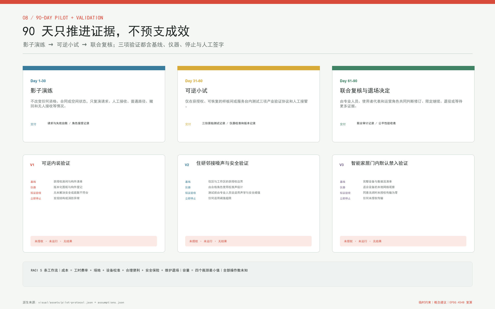
三项产业验证把 AI 与真实空间的关系限制在可撤回的试验中，并把“测什么、谁签字、何时停”写成协议 指标。其一，“可逆内装验证”从获授权房间与构件清单、现状缺陷、疏散/消防/结构/无障碍人工复核开始，经干跑、见证转换和见证恢复；未解决的安全问题、损伤、撤回或无法恢复均立即停止。其二，“住研邻接噪声/安全验证”先由合格角色设定适用阈值并用校准仪器建立分时基线，再做封闭低强度测试；越阈、越界、隐私安全事件或投诉无人接收即停。其三，智能家居“门内默认禁入”用设备与数据流清单、本地网络观察、物理状态和删除记录进行负向测试；拟议验收条件是同意关闭时未授权传输为零、撤回后基本功能仍可用。这里的“零”是 go/no-go 条件，不是已经取得的结果。
三项验证的样本、场地、适用阈值和结果目前都未获授权，统一为 not_authorized_not_run。任何未来记录须保留仪器校准、原始分母、失败、撤回、异议和人工签字，不能以一次演示、参与人数或营销视频替代结果。桌面结构校验只证明合同可解析，不证明空间、安全、公平或技术成熟度 指标 深度。
治理底线明确：AI 不决定入住资格、租金、住房分配、工位准入或公共服务权利，不做个人与家庭评分；每项服务均提供人工复核、无 AI 路径、授权撤回和申诉记录。聚合数据只能用于改善供需接口，不能转售、画像或用于隐性排斥。此边界让“AI 原生”表现为更好的可解释协作，而不是把重要权利自动化。
用地、建筑规模与拆改留方案
概念用地由七个合法代码层组成，而“四居”指四种居住状态，两者不混用。0802 表达研发与住研协同，0701 表达可变居住，0702 表达社区接力服务设施 空间数据 空间数据 空间数据。
代码 05 表达抵达与项目配套商业服务，1401 表达居业接力绿廊，1403 表达主线与站点广场 空间数据 空间数据 空间数据。1207 表达横向接力连接；七类 polygon 从同一临时边界统一切分，目标是建立覆盖完整、可重算的讨论底稿，不是对现行地类、权属或规划许可的认定 空间数据 标准 深度。
建筑只表达四种基底原型：可转换抵达短住与住研庭院对应两类抵达、项目阶段空间 空间数据 空间数据；家庭或无障碍可变住宅对应家庭阶段，社区服务亭则为既有或未来长期社区提供咨询、照护与交接接口 空间数据 空间数据。“四居”与“四个基底原型”不是一一对应：社区长期居住依托待核实的现状住房与未来依法落实的供给，本包不为它虚构新的住宅基底。原型强调首层公共性、清晰的公私边界、自然采光、可拆装内装和维修可达，不声明楼层、高度、产权、套数、总建筑面积或真实供应量。提交中的建筑基底面积是设计图层自身的复算结果，不能被换算为住房产能或开发权益 指标 指标。
拆改留采用“证据到位后分类”的程序，而非先画结论。文保建筑与控制地带先核定保护要求；结构安全、消防、用途、年代、产权和使用状态逐栋调查；随后才可形成保护修缮、保留改善、功能改造、拆除重建或空地新建建议。当前缺少上述底数，所以本方案不点名任何建筑拆除，也不宣称某一建筑可改作住房 深度 来源。
开发强度同样保持开放。容积率、建筑密度、建筑高度、退线、日照、消防间距、停车供给和总量平衡均为待正式数据补齐；图中的分段体量只用于解释公共界面和住研邻接关系。获得 official controls 后，应逐地块校核，而不是用总体平均值替代法定控制 深度 深度。
这一保守表达并不削弱设计：它把可立即测试的服务协议、家具内装和公共空间活动，与必须等待审批的土地和建筑动作分开。先通过短周期、低扰动试点证明需求，再决定永久投资，可降低空置、排斥与不可逆改造风险。
交通、轨道、市政与公共服务设施
交通策略以“门到桌”连续性为检验单位。居业主线承担南北步行与骑行识别，六条横向接力链把社区、园区、校园边界、公共服务和轨道站点接入主线；三站分别处理北部对外联系、中部近校慢行和南部轨道换乘。线路是概念中心线，只指示需要现场核查的联系方向，不是道路设计、过街批准或无障碍合格证明 空间数据 深度。
慢行优先不等于忽略服务交通。每一站建议分开组织步行、骑行、无障碍落客、维修与应急到达，设置不占主通行面的非机动车停放与短时装卸。大钟寺四象限、五道口与清华东路西口接驳、众智园跨五环联系均需客流、道路红线、信号、桥隧和安全专项论证；本方案不提供工程可行性结论。
市政与新型基础设施采用“共享机房、端侧处理、最小采集、人工可接管”的节点策略。服务亭可整合公共信息、设备充电、应急呼叫和维修工单，但供电容量、通信冗余、排水、消防、防洪与地下管线位置均待专项资料。任何端侧算力部署先满足能耗、散热、网络安全和运营责任，再讨论空间落位；图中约束线只是“缺官方控制资料”的注记范围 深度 空间数据。
公共服务设施强调普通入口与包容性：住房咨询、企业服务、健康导航、照护转介、文化导览均同时提供线上和线下渠道；老年人、残障使用者、国际访客与夜班劳动者不因无法使用智能终端而失去基本服务。真实服务容量、开放时段、人员编制和步行时间目前均为未知，需在运营主体与现场调查明确后补齐。
轨道叙事中的“换挂”最终落实为换乘成本可见：标识要告诉使用者下一段路由谁维护、何时开放、遇到故障去哪里；数字系统不能只给最短路径，而应呈现无障碍、夜间照明、天气和人工帮助选项。这些信息先经人工维护，再允许 AI 做解释与多语转换。
蓝绿空间、公共空间与城市风貌
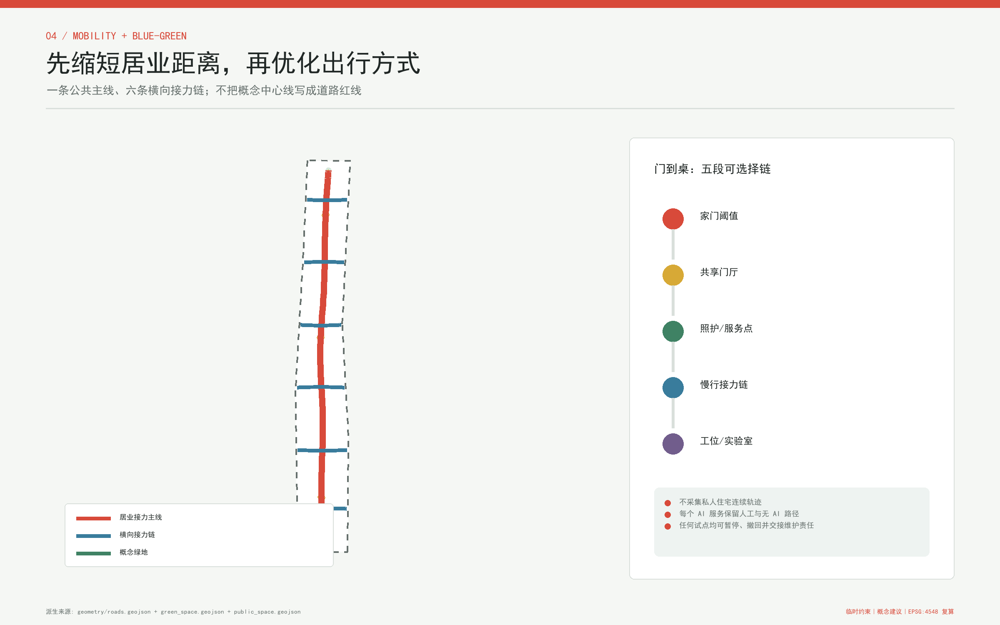
蓝绿系统以京张遗址公园为连续公共骨架，并把清河、小月河及片区绿地作为需要专业校核的生态联系。设计图层中的绿地和公共空间比例来自 provisional boundary 内的概念 polygon，可用于检查方案内部结构，却不能替代绿线、蓝线、防洪、生态或公园已实施边界 空间数据 指标 深度。
公共空间由“经过”与“停留”两套空间共同构成。连续步行骑行面服务通勤，门前檐下、共享庭院、照护等候点、夜间值守点和安静工作角支持日常停留；公共活动界面保持轮椅回转、连续遮阴、可坐靠边缘和清晰照明。公共空间复算比例只说明当前设计图层的覆盖，真实开放权、开放时间与维护责任仍待核定 空间数据 指标。
三处地标把铁路文化变成可使用的公共设施。“第一把钥匙”位于抵达入口，以可触摸地图和人工服务标记第一段居业选择；“居业里程表”沿主线用匿名聚合数据展示住房、工位和服务之间被缩短的连接，不显示个人排名；“回程票档案”在历史节点收藏经授权的离开与回流故事，保留纸本与无屏幕阅读。三者均为概念性地标，位置和形式须经文保、景观、无障碍与公众参与复核 来源 来源 来源。地标总数由图层和指标交叉核对，不把品牌口号当成空间成果 指标。
风貌基调取自铁轨的线性、枕木的节奏和站房门窗的尺度感，但不仿古造景。视觉系统采用白、炭黑、信号红、叶绿和青蓝；logo 将枕木转译为门框与钥匙，表达“路在延伸，居所有门”。建筑与设施强调耐久、可维修和昼夜可读，不使用外部商标，也不把清华园车站或京张历史简化为商业布景。
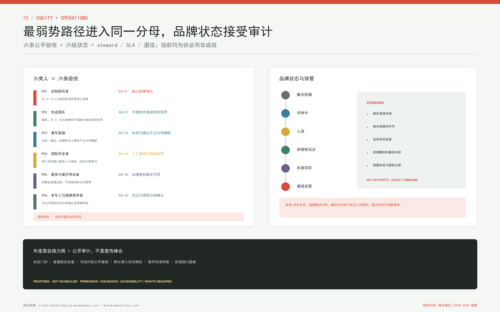
公共利益验收不看一个平均“完成率”，而把六类画像、AI/无 AI、昼夜、语言、合理便利、站点、结果和停止触发分别报告。六条拟议验收规则要求：核心结果等价；选择无 AI、撤回或合理便利不增加价格与权利惩罚；失败、退出、延期和无人接收保留在分母；每个开放窗口有人接收投诉；无障碍路径须由完整走查证明；交出与接收分别确认 指标。这些规则目前没有实测值，ordinary_route_outcome_parity 等指标保持未知。
品牌长期运营不由一个 logo 自动发生。方案建议设置独立的品牌、来源与状态保管角色，维护双语术语、许可、署名、撤回、失败和退役记录；所有传播材料必须在“概念投稿、评审中、入选、获授权试点、批准项目、建成运营”中选择有证据的一种状态。保管者、预算和响应时限尚未确定，服务时钟只给计算方法；来源状态或普通路径争议无人负责时，相关内容或场景暂停 来源 深度。
年度“居业接力周”把空间从一次性展陈转为持续协作：公开可逆内装样板、无障碍步行审计、服务目录校对、离开与回流故事、企业与居民共同测试。活动规模、许可、安全和版权由运营团队逐年审查；对外传播必须区分“概念投稿、进入评审、获选、批准建设和实际建成”等状态。
长期运营采用全年节奏，而不把一年一次活动当成全部机制：
| 运营组件 | 节奏与公共界面 | 责任链及公开记录 | 启动或继续条件 |
|---|---|---|---|
| 居业接力周 | 每年集中展示样板、步行审计、故事与联合测试 | 联合运营组发布活动许可、安全、版权、参与反馈和整改清单 | 场地许可、保险、安全与无障碍方案通过人工审查 |
| 开发者社区 | 每月维护门诊、每季度开源议题会与代码/文档复核 | 社区维护者通过 Issue/PR 记录版本、署名、许可、漏洞和未决问题 | 不发布个人数据；安全问题和利益冲突有明确负责人 |
| 场景开放运营 | 每季度更新场景目录、开放规则、数据说明和退出条件 | 每个服务运营者公开版本、值守时段、人工路径、投诉与停用记录 | 无责任主体、无离线降级或无退出机制的场景不得上线 |
| 三处地标运营 | 常态开放、季度做可达性/内容/设施检查 | 公共空间、文保、无障碍与社区保管人共同维护纸本和数字内容 | 文保、公众同意、数据最小化与维修责任持续满足 |
| 公共体验路线 | 按季组织从第一把钥匙到回程票档案的双语步行体验 | 路线维护方公开临时中断、照明、天气、无障碍和人工帮助信息 | 现场走查通过；不把概念中心线宣传为已批准道路 |
| 国际传播 | 每半年发布双语案例、失败记录、许可状态与复算方法 | 传播团队保留来源、贡献者和“投稿/评审/批准/建成”状态标签 | 禁止未证实绩效、官方背书或第三方视觉资产 |
| 招引转化 | 在公开活动后由人工窗口连接研究、企业、住房和服务选项 | 招引与服务人员记录自愿转介，不建立个人价值分或自动资格 | 住房、就业和公共服务决定保持分离并可申诉退出 |
实际运营主体、预算、服务容量、参与人数、招引转化和留驻效果当前均未知；表格定义的是必须先建立的责任与公开记录，不是已承诺活动、政府安排或绩效保证 来源 深度。
更新项目清单、实施政策与分期计划
更新项目按可逆性与资料依赖组织为八个工作包：JZ-01 建立 official 数据接替与现状调查底座；JZ-02 试行居业主线及六条接力链的标识和微空间；JZ-03 至 JZ-05 分别建设众智园、原点社区、大钟寺三站的可撤回样板；JZ-06 测试四类居住与服务空间原型；JZ-07 建立人工复核、数据撤回和断网降级机制；JZ-08 运营三处地标与居业接力周。清单是建议的实施顺序，不是财政立项或施工承诺 深度 空间数据。
实施节奏分为三期并由一项前置准备工作把关：准备工作锁定来源、official polygons、文保与权属底数；一期测试抵达与服务接力，二期连接家庭与居业转换网络，三期验证住研关系并形成全线联系 空间数据 空间数据 空间数据。每期都从标识、家具、服务台和可拆装内装等低扰动动作开始，永久建筑或基础设施必须另经控规、工程与运营审查。安全、隐私、公平或维护责任无法满足时，不进入下一期 深度 来源。
空间三期之外，任何真实服务先经过一项独立的 90 天协议试点 指标。第 1-30 天为“影子演练”，只用合成案例复演目录、人工接收、撤回、断网和无人接收，不改变真实合同、资格或空间；第 31-60 天为“可逆小试”，只有在场地与角色获授权后，才可在样板或服务台测试内装、邻接与默认禁入；第 61-90 天为“联合复核与退场决定”，公开失败和异议，判断修订、限定继续、退役或等待更多证据。前一阶段的责任、普通路径、原始记录或回滚缺一项，后一阶段不开启。
RACI 以五条工作流固定：协议与范围、可逆空间与安全、数据同意与 AI-off、服务与公平、成本容量采购与退出。每条都区分负责、批准、咨询和知情角色；当前只写角色，不虚构具体机构已经接受。成本采用 人员工时×批准费率 + 场地 + 设备校准 + 合理便利 + 保险许可安全 + 维护备件 + 退场恢复 + 批准预备费，容量采用 min(人工可用分钟/实测中位个案时长, 获授权空间槽位, 已验证无 AI 容量, 维护应急容量)。所有操作数仍未知，因此试点总成本和每日容量均不填数；询价、生命周期、退场资金和责任未闭合时 no-go 指标 指标。
采购只写功能、无障碍、互操作、数据导出、离线接管、备件和退役要求，不指定供应商。验收把协议合规、安全、公共利益等价、生命周期成本与现场效果分开，不能用“演示成功”替代任何一项。若产品只有在厂商远程支持下可用，或退出后不能恢复普通服务，则不通过接收。
政策建议集中在“可转换而不失权利”。租期转换需公开规则和人工协商；户型转换需住户、产权与专业安全同意；工位转换不得绑定住房退出；公共服务不因雇主变化中断；私宅数据采用主动授权和最小化保存；离开与回流只保留自愿的社区联系，不产生自动资格。这些是运营协议建议，需住房、劳动、数据、消防与基层治理专业团队共同审查。
实施主体建议采用“公共部门定边界、专业团队审技术、社区共议日常规则、运营机构保连续、AI 只做辅助”的责任链。每个试点发布责任人、服务时段、投诉方式、数据清单、退出方式和复盘日期。年度居业接力周既是公共活动，也是一次公开审计：哪些短链真正减少中断，哪些服务制造了新门槛，都应被记录并修订。
当前 phasing 图层面积仅是概念性方案范围的可复算结果，不代表征收、供地、投资或建设规模。official boundary 更新后，要从第一步重新生成分期 polygon，而不是把旧面积比例机械套用到新边界。
指标体系、面积复算与合规矩阵
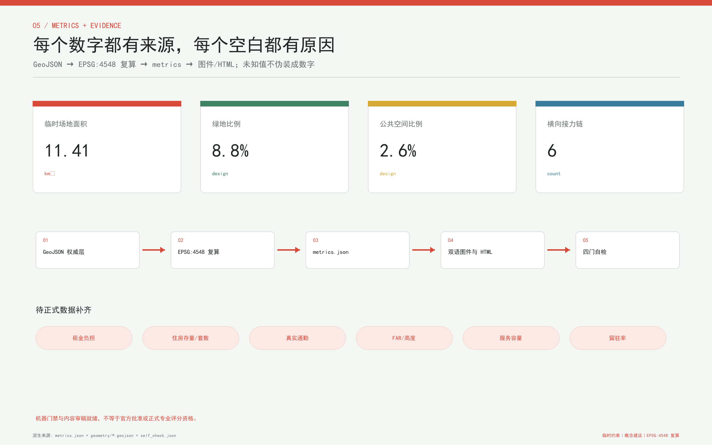
指标分为“已知的提交图层复算值”和“待正式数据补齐”两类。前者包括临时总体边界面积、设计建筑基底面积、绿地比例、公共空间比例、道路占比和重点区数量；其作用是验证 GeoJSON、图件与文本是否一致，不是公布法定规划指标 指标 指标 指标。
面积统一在 EPSG:4548 下复算，GeoJSON 以 EPSG:4326 交换。用地 polygon 需完整覆盖同一提交边界且无重叠与缝隙；建筑基底应落在允许的设计用地内；绿地、公共空间、道路和分期面积从对应图层求和。绿地、公共空间和道路比例分别以提交边界面积为分母，所有舍入只用于展示，校核使用未舍入值 指标 指标 指标。
空间概念的数量也由结构化图层校核：一条公共主线、六条横向接力链、三座服务站和十二张场景卡必须分别与 feature 及场景清单一致，而不能只存在于标题口号中 指标 指标 指标。场景卡与建筑原型数量单独锁定，避免翻译、图件和正文漏项 指标 指标 深度。
v1.2 进一步校核协议资产：六份接力合同、九个状态、三道闸门、十二项离线桌面检查、三项产业验证、三阶段 90 天协议、五个区域接口、六条公平验收规则和三份站点服务蓝图均从对应 JSON 数组计数 指标 指标 指标。这些计数证明“交付存在且可解析”，不把桌面校验通过率外推为实际服务成功率。
一期、二期与三期面积从各自 polygon 直接复算，用来检查分期图层是否完整，不表示征收、供地或投资规模 指标 指标 指标。三期总数另由结构化指标校验 指标。以下指标明确保持 unknown：租金、住房存量、住房单位数、可负担性、真实通勤时间、服务容量、试点全生命周期成本、普通路径结果等价、交接闭环、私宅未授权传输、内装恢复验收、容积率、建筑高度和人才留驻率；任何问卷、平台日志或运营数据也必须先说明样本、授权、时间、分母与偏差，再进入评价。
合规链由三部分构成：专业标准矩阵回答城市设计、控规和用地分类要求；设计深度矩阵连接现状诊断、空间结构、用地、强度、风貌、拆改留、交通、市政、蓝绿、重点区、项目、分期、复算与风险；任务覆盖矩阵映射公告与 agent.1 至 agent.6。正文只放相邻证据，完整索引留在结构化文件中，以免机器编号压倒设计阅读。
本次复算证明的是“方案包内部可追溯”。由于边界和重点区为 provisional constraint，即使拓扑检查全部通过，也不能推导出专业评分所需的精确用地平衡、建设容量或实施边界。official polygons 到位后必须重跑全部几何、指标、图件、HTML、PDF 与 manifest 哈希。
风险、版权与合规说明
首要风险是空间精度。Issue #846 与 #1029 表明官方总体范围和重点区精确 polygon 尚未进入可核验资料包；临时 geometry 虽可支持 intake 和内容讨论，却不能作为 official redline、审批依据或依赖精确面积的专业评分依据。本方案不引入 OSM 或文字四至自行纠偏。获得 official polygons 后，应整体替换、重算并由规划专业团队确认 来源 来源 深度。
第二类风险来自实施资料缺口。现状建筑、权属、文保控制地带、道路红线、客流、管线、消防、防洪、环境和土壤资料不足，因此建筑改造、交通跨越、蓝绿复合利用和设备安装都只作概念建议。清华园车站及京张遗产相关动作须以官方文保文件和现场专业评估为前置条件，图中相关线条只是缺资料注记范围而非文保边界 来源 空间数据 标准。
第三类风险是住房公平与数据治理。服务平台可能把“人才”变成排斥标签，把便捷推荐变成隐性分配，把家庭数据变成评分原料。方案以不自动决定资格、价格与分配，不做个人家庭评分，门内默认禁入，最小采集，人工复核，无 AI 路径和可申诉退出作为硬边界。实际试点还需法律、住房、劳动、伦理、网络安全和无障碍审查。
结构化风险矩阵覆盖数据隐私、实施复杂度、公众接受、运维成本、政策不确定、空间争议、技术成熟和公平包容八类。高风险项全部声明专业或公众人工复核；共同释放规则是：风险状态、证据责任、普通路径、停止授权和恢复条件必须同时可见，unknown 不是通过。simulation.json 只登记 12 项本地 schema 与状态引用检查，明确排除法律授权、现场运行、住房供给、可负担性、容量、安全和公众接受；其 task_count 与任务数组逐项一致，但不建立任何现场成效主张 指标 深度。
所有文字、图件、图层与代码生成过程按 sources.json 和版权声明披露。外部案例仅依据官方或机构公开页面作背景性概括，不复制受限图像、商标、平面图或他人投稿；本包不加载远程字体、地图瓦片、脚本、iframe、表单、API 或跟踪工具。许可 COMMUNITY-DISPLAY-ONLY 允许本次社区展示与评审语境中的使用，不自动授予其他商业复用权。
本方案是 NearCai 与 OpenAI Codex 的共创投稿。AI 参与检索、结构化、写作、图层和自检，人类账户持有人负责授权提交，最终规划、工程、政策和运营判断须由具有相应职责与资质的人员完成。任何对外表述都不得把“提交”误写成“入选”，把“概念建议”误写成“审定方案”，或把“试点”误写成“已建成”。
参考资料
- 北京市规划和自然资源委员会海淀分局，百年京张 AI 创新带城市设计国际方案征集资格预审公告，作为任务、三层范围与重点区名称的主依据 来源。
- 面向全球智能体的开源征集任务书及本地快照，作为三大定位、五大功能、三区两翼与六项 agent 任务的依据 来源。
- 仓库场地资料包、公开来源登记和处理后的事实导航，分别用于任务数据、资料用途边界和阅读索引；处理包本身不产生新权威 来源 来源 来源。
- 海淀区关于北京 AI 原点社区与“1+X+1”现代化产业体系的官方公开材料，用于产业与生态背景，不用于推断空间红线 来源 来源。
- 京张铁路遗址公园一期、二期公开材料与清华园车站文保、校史资料，用于公共空间与文化叙事；正式建设控制仍以清权官方文件为准 来源 来源 来源。
- 清华园车站历史资料用于解释“抵达、停留、再出发”的叙事线，不替代文物价值评估 来源。
- 国际背景案例：Cambridge Eddington、Paris Station F、Singapore one-north、MIT Kendall Square、Toronto MaRS、Barcelona 22@。案例只提取住房、创新中介、公共界面与更新治理的可转译原则 来源 来源 来源。
- 其余三项案例的机构资料分别支撑高校创新区、研究与企业平台、旧产业区更新比较 来源 来源 来源。
- 临时总体边界与重点区定位沿用仓库记录，不作 OSM 修正；Issue #846 与 #1029 是本次精度披露和后续替换触发器 来源 来源。
- 专业依据包括城市设计管理、控制性详细规划编制审批和国土空间用途分类的本地官方快照；完整条款对应关系见专业标准矩阵，不以本参考清单替代原文 标准 标准 标准。
资料检索与方案冻结日期以 sources.json、manifest 和提交记录为准。若公告、任务书、source registry、Issue 结论或 official spatial data 在提交前更新，应同步最新 main，重新判断受影响的文字、几何、指标、图件与自检结果后再提交。